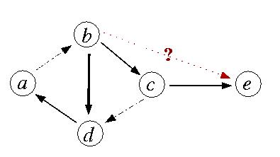

Roy's Tours example
[0-100]-valued digraph
Best unique choice problematics (P.alpha). Collapsing intranistive circuits.
B. Roy proposed this example in February 2005 (ROADEF'2005, Tours) in order to illustrate the necessity to take into accounts intransitive circuits when constructing best choice recommendations.
A = {a,b,c,d,e}, L =[0 - 100].
| S | a | b | c | d | e |
|---|---|---|---|---|---|
| a | - | 51 | 0 | 0 | 0 |
| b | 0 | - | 100 | 100 | 50 |
| c | 0 | 0 | - | 51 | 100 |
| d | 100 | 0 | 0 | - | 100 |
| e | 0 | 0 | 0 | 0 | - |

Following the Electre methodology, the cycle {a,b,c,d} may well be collapsed into a single class of potentially equivalent decision actions which dominate action {e}. Thus these actions constitute the best choice recommendation.
The shown digraph above supports a unique dominant kernel {a,c} with credibility 51%, which should give, following the Ruby methodology, a natural and convincing best choice recommendation.
In the Ruby methodology we only consider odd intransitive circuits for best choice recommendations, so that we here may add the circuit {a,b,d} as potential best choice. In the given mixed hypergraph, the circuit {a,b,d} gives a sure stable partial best choice (100%), whereas {e} represents a sure stable partial worst choice (100%). The initial dominant kernel {a,c} remains however the unique determined best choice recommendation, it is true, with a very low credibility.